Blinky
Blinky is a small flashing plastic dome. Several are meant to be spread across a surface to give a twinkling effect.

Motivation
There were two motivations for this project: testing v-score vias and trying out JLCPCB's 3D printing service.
V-Score Vias
A v-score (or v-cut) is a method used to make PCBs easy to detach from their panel. It involves running two saws with a v shaped profile on either side of the PCB, each cutting 1/3 of the way through. What's left is a weak point that's easy to break. They're somewhat easier to design with than mouse bites, the other common method of getting a PCB to break out of its panel. More information about v-scores can be found on PCBWay and JLCPCB.
Since the surface layer of the PCB is cut, this also cuts the top and bottom layers of copper. Even 4 layer boards often have all their layers within the first or last third of the PCB, meaning the inner layers are cut as well. As a result, power and signals can't travel past a v-score. If you want to test all the boards in a freshly populated panel then you need to provide power to each board individually.
Some years ago I came across the idea of adding vias along a v-score in order to get power across them. Since the hole is plated all the way through the v-score saws can't remove all the copper and some conductivity remains. This project was my attempt to replicate that idea so I could use it in more serious future projects.
Via Dimensions
Conduction Requirement
So how big does the via need to be to maintain a conductive path after being cut? I 3D modelled a cut via in order to better understand the geometry:
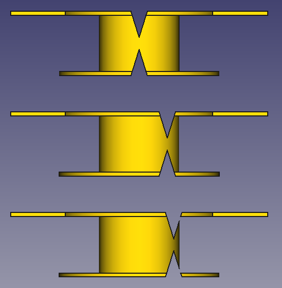 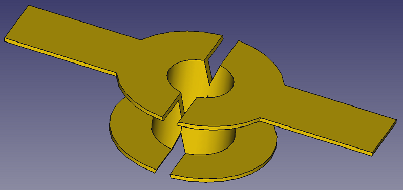 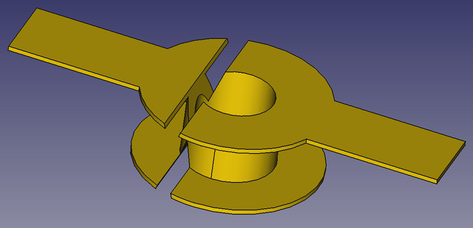 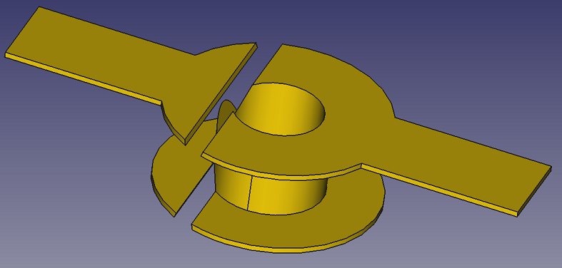In the first one, the saw is centred on the via and a clear conductive path exists.
In the second, the saw is starting to bite into the hole wall plating, but a thin conductive path still exists.
In the third, the saw has breached the outside edge of the hole wall plating, creating a gap and breaking conduction.
These three not-to-scale models show what happens as the blade gets closer to the edge of the via and gives us a requirement for the via maintaining a conductive path.
As long as the two circled points don't overlap or pass each other, the via will conduct.
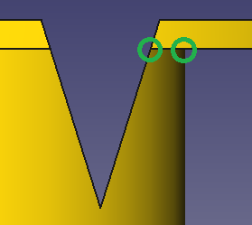These points are the point where the edge of the saw intersects the bottom of the top copper layer, and the point where the top copper layer intersects the outer edge of the via wall plating.
Of course, the larger the distance between those two points, the lower the resistance of the via will be.
Manufacturing Tolerance
Another things to consider when sizing the via is the manufacturing tolerances of the PCB fabricator. The PCBWay website gives the following tolerances:
| V-score angle | 30±5° |
| Alignment tolerance between upper and lower blades | ±0.05mm |
| V-score location tolerance | unknown |
Also, "When the final thickness is greater than 1.0mm, the remaining thickness is generally 1/3 of the board thickness."
PCBWay doesn't give a tolerance for the distance between where the blades are meant to cut vs where they end up cutting, which is different than the alignment tolerance given above. I also didn't consider the drill hole size tolerance or drill hole location tolerance.
I used the tolerances PCBWay gave to make the below drawing, which marks out the stacked tolerance width that the blade can cut through. Using the conduction requirement given above, as long as the drilled hole diameter is wider than that width (0.44mm), the via will conduct.
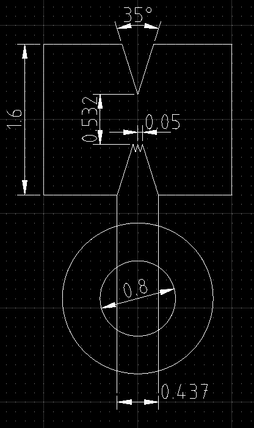Due to the unknown tolerance (and because I wasn't size constrained) I picked a via hole diameter of 0.8mm.
Project Selection
I suppose I could have made a really simple PCB with a v-score down the middle running across traces and vias. I could measure the conductivity across the v-score, see that is was still there, then declare success. But that's no fun. You know what is fun? Blinking lights. (Also see the set background props here.)
So how about a little glowing dome you could sprinkle around a dimly lit party? It would be kind of like fairy lights but bigger and they don't have to be connected together. Battery life should be at least 16 hours so they can be set up before the event. Production price should be as cheap as possible to encourage buying more since I think you'd want at least 50 scattered around a room to get a good effect. I also don't want to use a microcontroller since that's kind of overkill for just blinking a light. I wanted it to be low power to increase battery life, but realized that the LED was going to draw at least 10 mA, which was much larger than the current the oscillator would use. I decided to aim for a current draw that would reduce the lifetime of the LED by less than 10%, so under 1mA. In other words, the LED can draw 10mA and the circuitry that makes it flash should draw less than 1mA.
Circuit Selection
So how should I blink a light? My main criteria was just to use a circuit I hadn't experimented with before so I chose the BJT based Astable Multivibrator. (Information from Electronics Tutorials and Wikipedia.) I like that it produces two waveforms that are the inverse of each other which can be used to drive any sort of differential communication bus more easily than just a single ended signal would.
Schematic
Here's the circuit I ended up using. See the Appendix at the bottom of this page for some analysis. After thinking about it for a while I had enough of an intuitive understanding of how component values affected things that I just played with them until I got a blinking pattern I liked, keeping low current draw in mind.
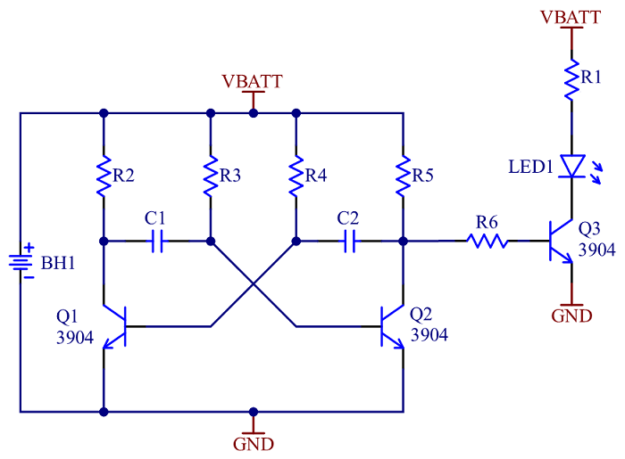| Description | Comment | Designator | MFG | MFG PN | Q |
|---|---|---|---|---|---|
| BATT HOLDER COIN 20MM SMD | CR2032 Holder | BH1 | TE | BAT-HLD-003-SMT | 1 |
| CAP CER 1UF 16V X5R 0603 | 1µF | C1, C2 | YAGEO | CC0603KRX5R7BB105 | 2 |
| LED RED 0603 SMD | VLMS1300-GS08 | LED1 | Vishay | VLMS1300-GS08 | 1 |
| TRANS NPN 40V 0.2A SOT23-3 | MMBT3904 | Q1, Q2, Q3 | Diodes Inc | MMBT3904-7-F | 3 |
| RES 39 OHM 5% 1/10W 0603 | 39Ω | R1 | YAGEO | RC0603JR-0739RL | 1 |
| RES 1K OHM 5% 1/10W 0603 | 1kΩ | R6 | YAGEO | RC0603JR-071KL | 1 |
| RES 10K OHM 5% 1/10W 0603 | 10kΩ | R5 | YAGEO | RC0603JR-0710KL | 1 |
| RES 470K OHM 5% 1/10W 0603 | 470kΩ | R2 | YAGEO | RC0603JR-07470KL | 1 |
| RES 4.7M OHM 5% 1/10W 0603 | 4.7MΩ | R3, R4 | YAGEO | RC0603JR-074M7L | 2 |
| Build Volume | Per Unit Cost (CAD) |
|---|---|
| 10 | $1.437 |
| 100 | $0.9209 |
| 1,000 | $0.6420 |
| 10,000 | $0.5677 |
These values give an LED cycle of on for 3s and off for 0.81 seconds.
Breadboard
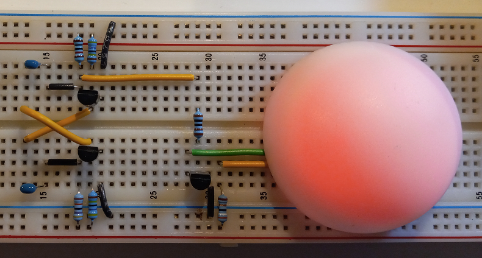I ended up increasing the LED current to 15mA to get something that seemed (somewhat arbitrarily) bright enough.
Testing its run time from fresh battery to not flashing anymore showed that it lasted more than 2 days. This was way more than the 16 hours I was hoping for so I stopped worrying about low power design.
PCB Design
A circuit this simple can be 2-layer, single sided.
The overall size was constrained by the battery holder on the bottom. I probably could have made it smaller if I used a through hole version without the big side pads, but the SMT version was cheaper so I decided to try it first.
I thought I'd challenge myself a bit and do a radial layout for the A E S T H E T I C. In the end it was annoying enough to solder while panelized that I wouldn't do it again. I'd also rotate the SOT-23 packages 90 degrees so the legs were on the sides of the component stack and easier to solder.
I'm kind of annoyed I didn't realize that the C1 and C2 positions weren't symmetric (one is closest to the edge and one isn't).
In order to get short traces with the radial layout, I had to make some of them not 90° or 45°.
I always try to find something fun to add to the silkscreen. In this case it's the alchemical symbol for phosphorus, the closest symbol I could find to represent light.
I did think about making the solder mask white in order to reflect a bit more light out of the dome, but I wasn't sure the difference would be noticeable and green was cheaper.
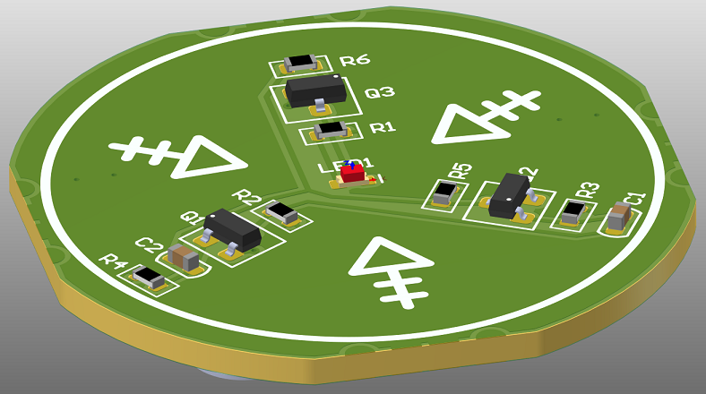 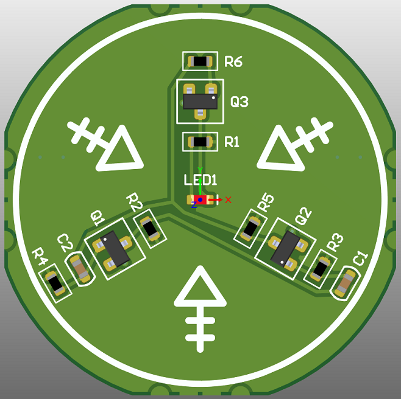 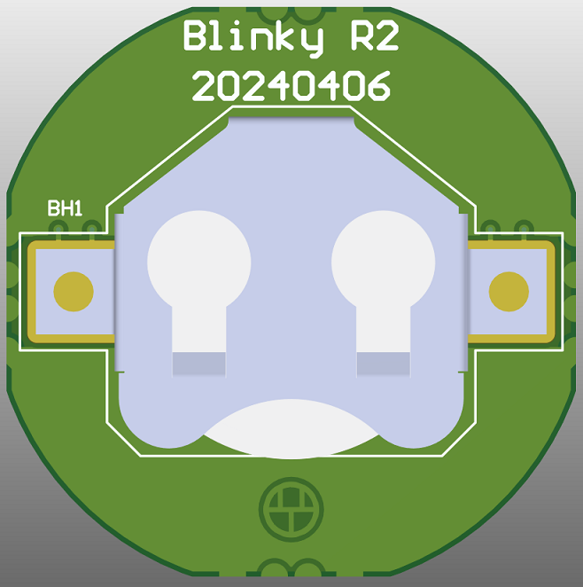 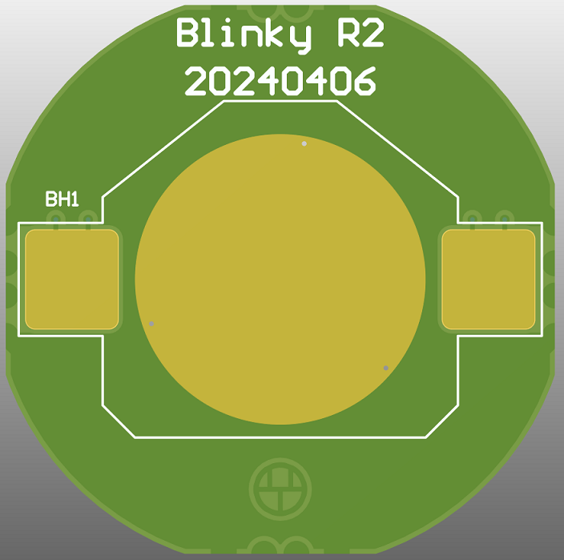 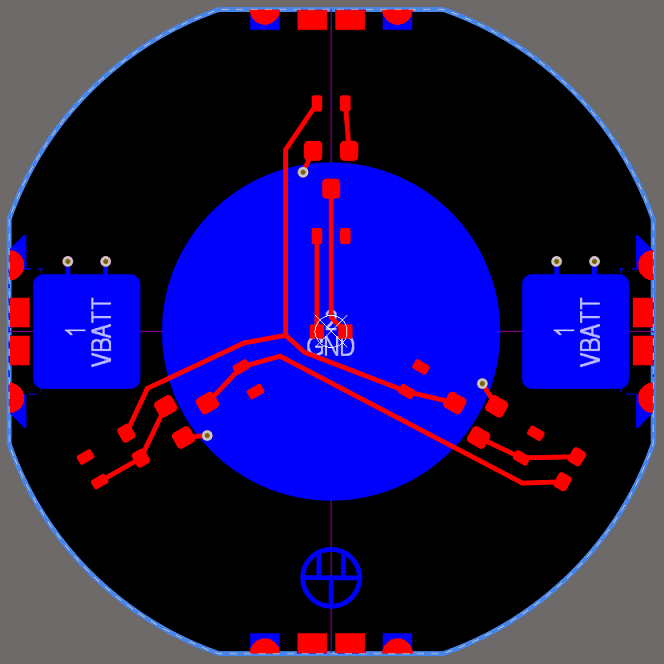 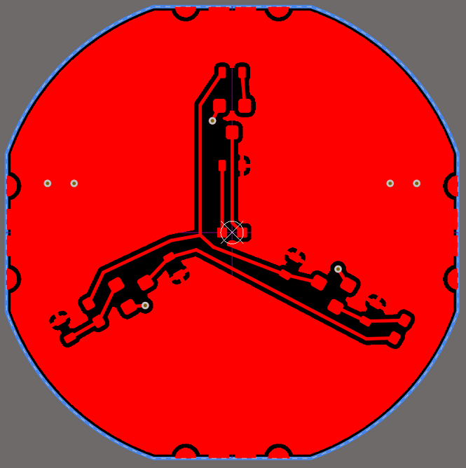 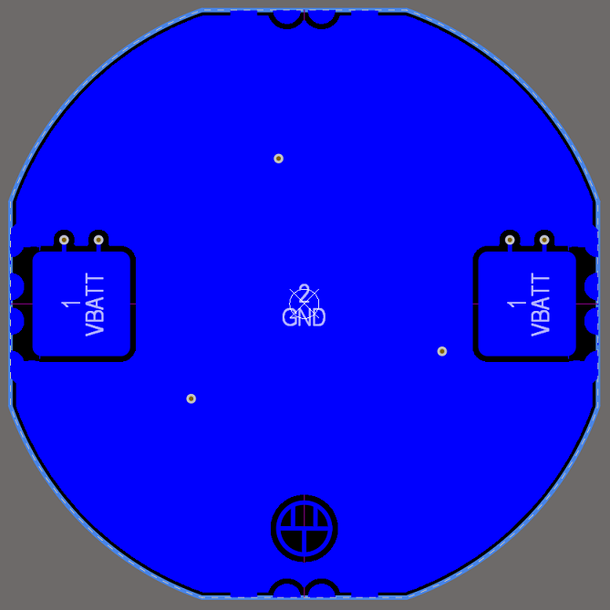Panelization
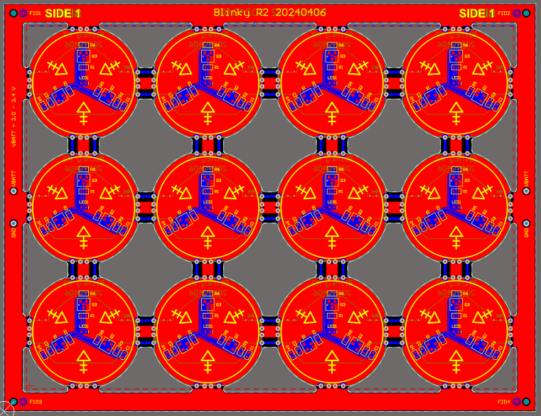Here you can see the vias on the edges of the individual PCBs. I added a bit of redundancy with two vias per power rail at each connection point. One thing I didn't think of was that I didn't specify skip v-scores, so they went through the outer rails as well. I was hoping for the redundancy of being able to feed power into the boards at every rail connection point, but as it turned out all power flowed through the PCB closest to the power connection holes.
The way I designed the power connection points (two TH pads) ended up being kind of annoying. In the future I'd try my other idea and just make bare copper areas an alligator clip can attach to.
Plastic Dome
The enclosure is just a hollowed out dome with a shelf to position the PCB and two nubs to retain it. The shelf the PCB rests against extends completely around the perimeter to accommodate the possibility of using an adhesive if the nubs completely failed for some reason.
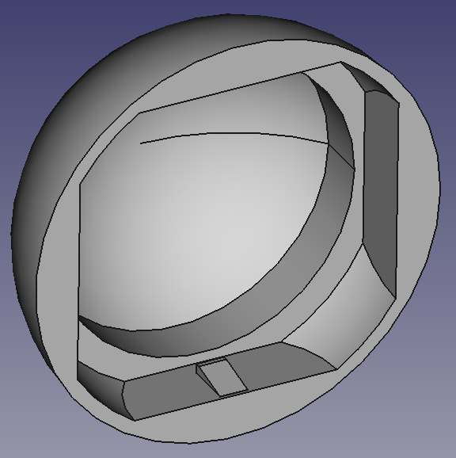 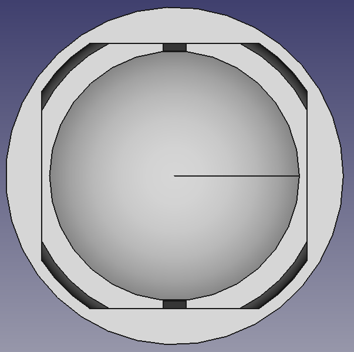 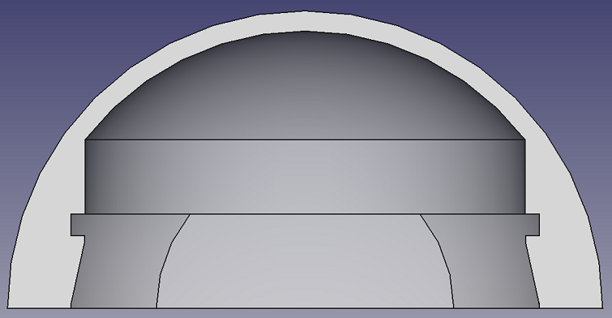 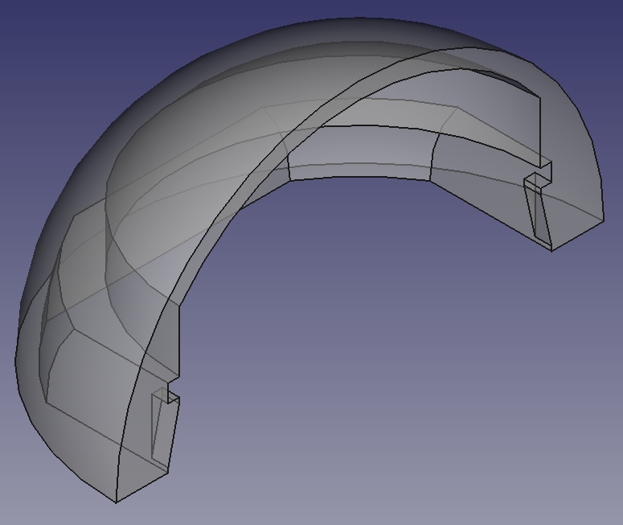One issue I found was that the PCB retaining nubs were too aggressive (or the material wasn't flexible enough.) I'd try maybe half their height next time.
Battery
The most annoying aspect of this design is interacting with the battery, since you have to take the PCB out in order to change it. If I redesign it I'll rotate the battery holder 45° and add a cut out on the rim of the dome that lets you slide the battery out. I'd make the cut out flush with the surface of the PCB so that the PCB could still be glued into the dome and sealed.
Light Transmission
My main concern with the dome was how much light would be able to shine through. This depends on the dome material selection, dome thickness, light brightness, and geometry. My approach was to try to optimize these parameters where I could and otherwise roll the dice and iterate.
I tried the default 3D printing material JLCPCB offers (LEDO 6060 Resin), which has a minimum thickness of 0.8mm. I used 1mm for the dome thickness since I didn't want to push things right to the edge of possibility.
To figure out the geometry I looked up the LED's "angle of half intensity", which was ±65°. Oddly, this seemed to contradict the intensity graph given elsewhere in the datasheet, which said the intensity at 65° was ~65%, not 50%.
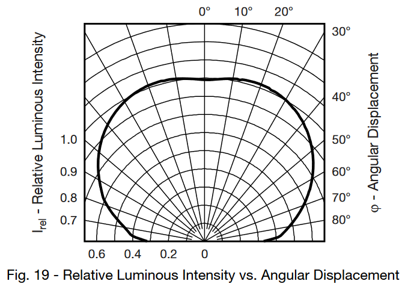I don't have the equipment necessary to measure the angle for myself, so I took the value given as the actual one and added a cone to show the angle in the 3D model.
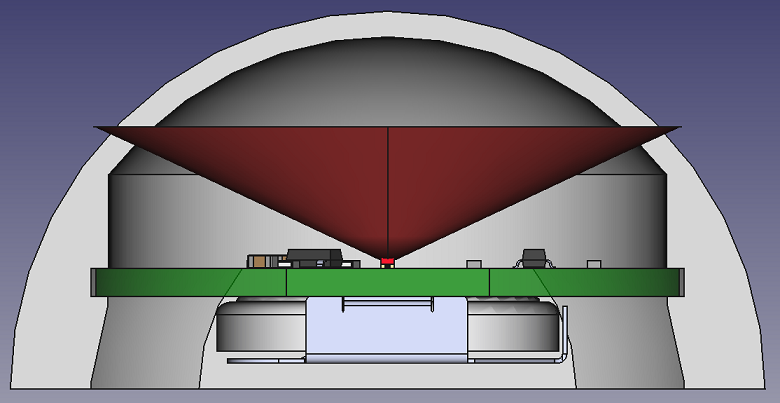The cone of "more than 50% intensity" is all within the thin part of the dome, so most of the photons have the best chance of escaping.
I did think about trying to add some sort of shiny coating to the PCB to reflect more photons outwards, but I didn't think the added complexity was worth it, especially when the breadboard prototype showed that enough light was escaping for a good illumination.
Assembly
Aside from the issues mentioned previously, there were no soldering issues. I was finally able to see if the v-score vias would work. I powered it up and all the LEDs immediately started blinking (after I fixed one cold solder joint), which was pretty gratifying.

Then I soldered on the battery holders, singulated the panel, and assembled the final devices.
I think this was a pretty good first revision. If I was going to try to sell it I'd want to make the few changes I mentioned above to make the battery easier to change.
It's biggest weakness is its reliance on a battery. I think it would interesting to try to add wireless power to it since there's room in the bottom for an inductive coil power receiver. I'd also add a cap to the bottom that's glued in for the IP rating since battery access wouldn't be an issue.
Price Analysis
Below is a pretty rough price analysis. The PCB and dome prices are from JLC (shipping not included) and the electrical components are from DigiKey. The batteries are from Amazon with no volume discount, thus the lack of price change.
At about 1,000 quantity I'd want to start looking into injection molding for the domes and look up bulk battery prices. I think it would also be possible to knock at least 10 or 20 cents off the PCB component's price by getting the battery holder from somewhere like Alibaba. Even at 1,000 they're still $0.35 from DigiKey, which seems high considering they probably make multiple per second in an automated metal stamping and folding machine.
I also haven't included the price of assembling the PCBAs, which would include the NRE fee to setup the assembly line and then the per unit price.
| Quantity | 10 | 100 | 1,000 | 10,000 |
|---|---|---|---|---|
| PCB | $0.202 | $0.168 | $0.090 | $0.076 |
| PCB Components | $1.437 | $0.921 | $0.642 | $0.568 |
| Dome (3D Printed) | $0.828 | $0.828 | $0.828 | $0.828 |
| Battery | $0.600 | $0.600 | $0.600 | $0.600 |
| TOTAL | $3.067 | $2.517 | $2.160 | $2.072 |
If I had to guess I might be able to afford to sell them for $5 each. Considering that to get the effect I'm imagining you'd want to spread ~50 around a room, so you'd end up paying $250. That seems like a lot. They're also battery powered, which means they're more suited for events instead of permanent installation. Maybe I could sell a hundred to an event rental company?
Appendix: Circuit Analysis
Other explanations of this circuit's operation can be found at Learn About Electronics, Electronics Tutorials and Wikipedia. 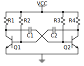
This circuit is a bit challenging to analyze. It's complicated by the entanglement of the BJTs and it's also impossible to draw without at least one wire crossing another. To make things clearer, let's colour in and label the circuit nodes.
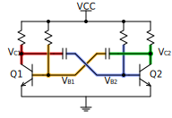It's still hard to know what state the BJTs are in just from inspection. At first glance it looks like both Q1 and Q2 would have to be on, because R2 and R3 are providing base currents to both of them at the same time. That wouldn't lead to any oscillation though, so for now let's do the analysis assuming one BJT is always on and one is always off, with them switching state at the same-ish time. This is a pretty big assumption we'll have to confirm at the end.
With our approach decided, let's simplify the circuit. We're going to assume Q1 is off and can be removed, and Q2 is on/conducting. This lets us draw the circuit like this:
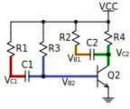While that makes the circuit easier to understand, the next problem is the capacitors. What state are they in? Answering this is nontrivial, since the starting state depends on the ending state of the last period of the oscillation. In other words, you have to already know what the end result is before you can say what the starting point is in order to figure out the end result.
What I ended up doing was simulating the circuit in LTspice and looking at the node voltages at the moment Q2 starts conducting. They're written below, along with arrows showing current flow.
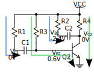From here's it's obvious that (if there was no other transistor) R1 charges C1 from 0V up to VCC, and R2 charges C2 from -2.4V up to VCC. VC2 stays at 0V (actually ~0.2V) and VB2 is at 0.6V, fully turning on Q2.
Okay, so when does the oscillation happen? For that we have to add the other transistor back in.
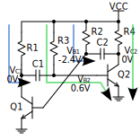From here it's easy to see that VB1 increases from -2.4V until Q1 turns on. At that point all the charge that was accumulated on C1 is dumped to ground through Q1, almost immediately lowering VC1 from some value between 0V and VCC to 0V. This has the side effect of causing VB2 to be reduced by the same amount (since the voltage across C1 can't change instantaneously), which lowers it's value enough to turn off Q2.
At this point the transistors effectively change places in the analysis and the capacitors start charging up again. We can now check that our assumption at the start was valid. Since we haven't run into any contradictions and we've ended up at the same place we started there's no contradictions. Everything is self consistent, so it's a pretty good bet that our analysis is correct.
One condition for oscillation is that, in the time it takes for VB1 to go from -2.4V to 0.6V, R1 has to be low enough that VC1 can charge high enough so that when it's dumped to ground VB2 will be reduced enough to turn Q2 off.
Here's the voltage waveforms (a first order approximation).
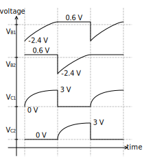Here's the current flows and initial voltages drawn on the full circuit in case that's helpful.
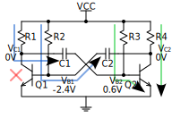One last thing is to think about is how adding the LED driver affects the circuit.
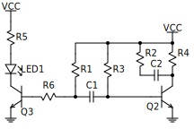We need to feed enough current through the BJT to saturate it while it's conducting ~15mA of LED current. This current will deduct from the charge that's gathering on the VC1 node and reduce its voltage. Remembering the oscillation condition above, the solution is to reduce R1.
Back to Projects